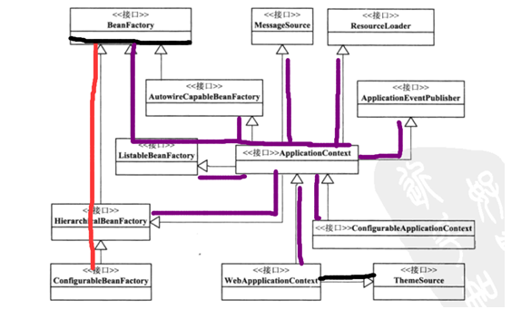

开始之前先说一下Beanfactory的结构原理：

下图是springIOC解析的整个过程：
IOC容器分为3个步骤： actualResources)中语句：
1 2 3 4 5 6 7 8 9 10 11 12 13 14 15 16 17 18 19 20 21 22 23 24 25 26 27 28 29 30 31 32 33 34 35 36 37 38 39 40 41 42 43 44 45 46 47 48 49 50 51 52 53 /** * Parse the bean definition itself, without regard to name or aliases. May return * <code>null</code> if problems occured during the parse of the bean definition. */ public AbstractBeanDefinition parseBeanDefinitionElement( Element ele, String beanName, BeanDefinition containingBean) { this.parseState.push(new BeanEntry(beanName)); String className = null; if (ele.hasAttribute(CLASS_ATTRIBUTE)) { className = ele.getAttribute(CLASS_ATTRIBUTE).trim(); } try { String parent = null; if (ele.hasAttribute(PARENT_ATTRIBUTE)) { parent = ele.getAttribute(PARENT_ATTRIBUTE); } AbstractBeanDefinition bd = createBeanDefinition(className, parent); parseBeanDefinitionAttributes(ele, beanName, containingBean, bd); bd.setDescription(DomUtils.getChildElementValueByTagName(ele, DESCRIPTION_ELEMENT)); parseMetaElements(ele, bd); parseLookupOverrideSubElements(ele, bd.getMethodOverrides()); parseReplacedMethodSubElements(ele, bd.getMethodOverrides()); parseConstructorArgElements(ele, bd); parsePropertyElements(ele, bd); parseQualifierElements(ele, bd); bd.setResource(this.readerContext.getResource()); bd.setSource(extractSource(ele)); return bd; } catch (ClassNotFoundException ex) { error("Bean class [" + className + "] not found", ele, ex); } catch (NoClassDefFoundError err) { error("Class that bean class [" + className + "] depends on not found", ele, err); } catch (Throwable ex) { error("Unexpected failure during bean definition parsing", ele, ex); } finally { this.parseState.pop(); } return null; }
3、注册
1 2 3 4 5 6 7 8 9 10 11 12 13 14 15 16 17 18 19 20 21 22 23 24 25 26 27 28 29 30 31 32 33 34 35 36 37 38 39 40 41 42 43 44 //--------------------------------------------------------------------- // Implementation of BeanDefinitionRegistry interface //--------------------------------------------------------------------- public void registerBeanDefinition(String beanName, BeanDefinition beanDefinition) throws BeanDefinitionStoreException { Assert.hasText(beanName, "Bean name must not be empty"); Assert.notNull(beanDefinition, "BeanDefinition must not be null"); if (beanDefinition instanceof AbstractBeanDefinition) { try { ((AbstractBeanDefinition) beanDefinition).validate(); } catch (BeanDefinitionValidationException ex) { throw new BeanDefinitionStoreException(beanDefinition.getResourceDescription(), beanName, "Validation of bean definition failed", ex); } } synchronized (this.beanDefinitionMap) { Object oldBeanDefinition = this.beanDefinitionMap.get(beanName); if (oldBeanDefinition != null) { if (!this.allowBeanDefinitionOverriding) { throw new BeanDefinitionStoreException(beanDefinition.getResourceDescription(), beanName, "Cannot register bean definition [" + beanDefinition + "] for bean '" + beanName + "': There is already [" + oldBeanDefinition + "] bound."); } else { if (this.logger.isInfoEnabled()) { this.logger.info("Overriding bean definition for bean '" + beanName + "': replacing [" + oldBeanDefinition + "] with [" + beanDefinition + "]"); } } } else { this.beanDefinitionNames.add(beanName); this.frozenBeanDefinitionNames = null; } this.beanDefinitionMap.put(beanName, beanDefinition); resetBeanDefinition(beanName); } }